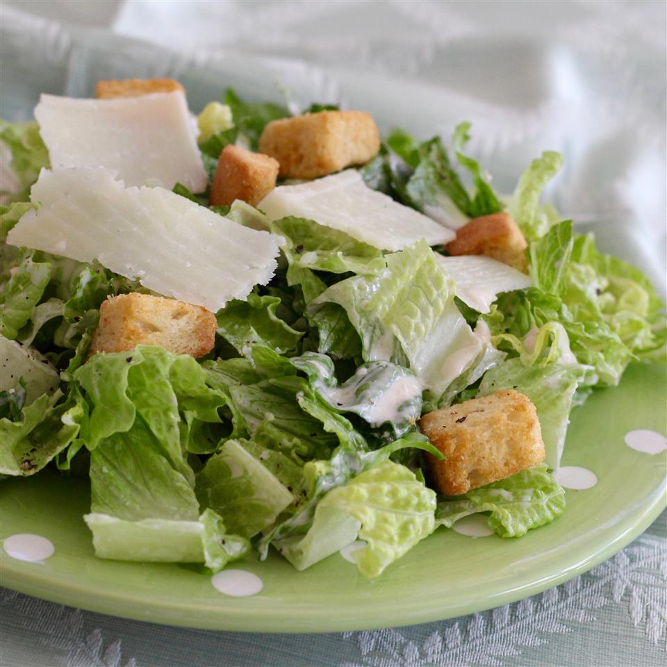

The Last Caesar Salad Recipe You'll Ever Need

Description
Hail Caesar! This is an unbelievable, restaurant-quality, creamy Caesar salad dressing that will make you swear off of anything store-bought again. Great for your classic Caesar salad, or as a dip for all kinds of veggies. Will NOT disappoint!
Ingredients
- 2 anchovy fillets
- 2 cloves garlic, chopped, or to taste
- 1 cup mayonnaise
- ⅓ cup grated Parmesan cheese
- ¼ cup half-and-half
- 2 tablespoons fresh lemon juice
- 1 tablespoon Dijon mustard
- 2 teaspoons Worcestershire sauce
Steps
- Combine anchovy fillets with garlic in a food processor and pulse several times to form a paste. Process mayonnaise, Parmesan cheese, half-and-half, lemon juice, Dijon mustard, and Worcestershire sauce with anchovy mixture until dressing is creamy. Refrigerate for 1 hour or more before serving.
- Eat!